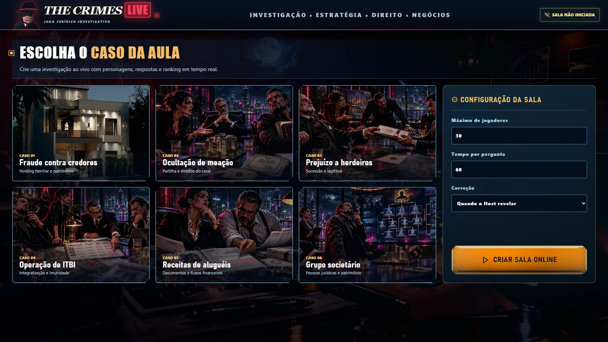
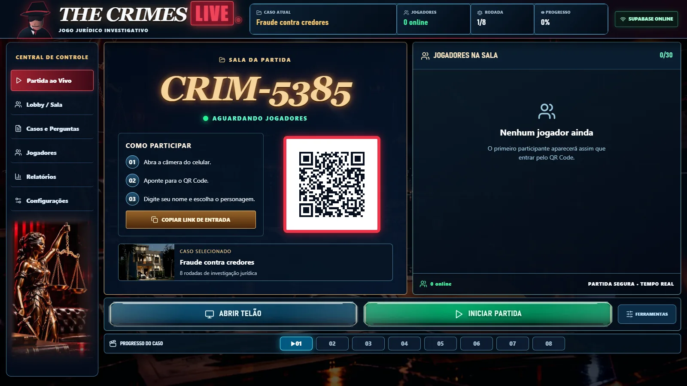
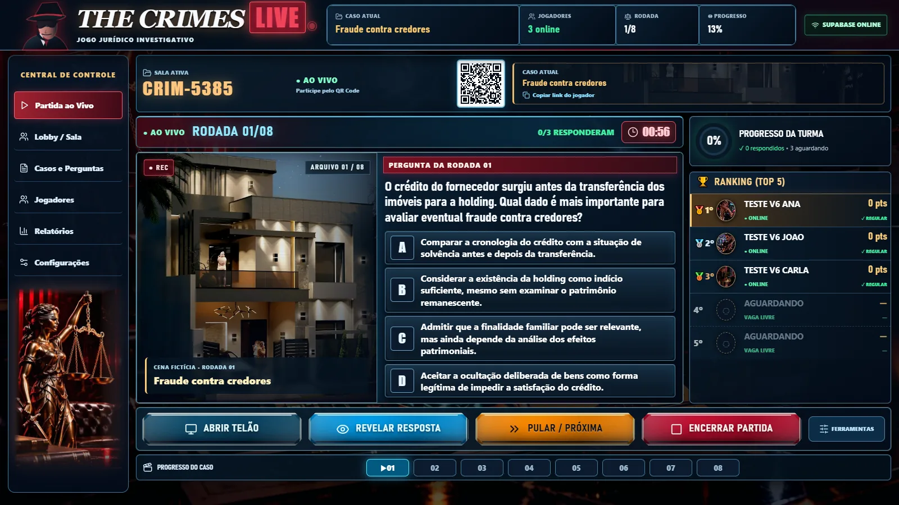
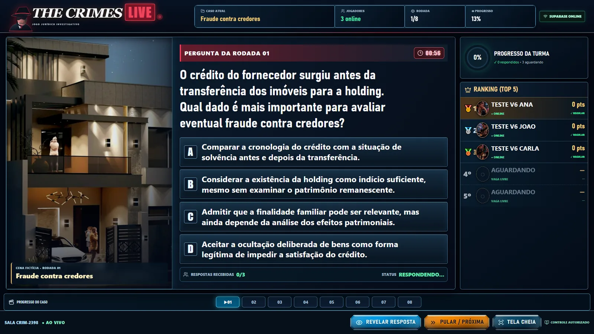
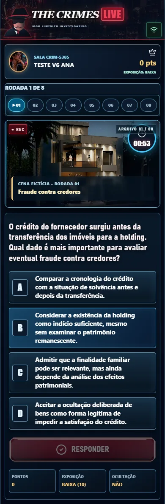
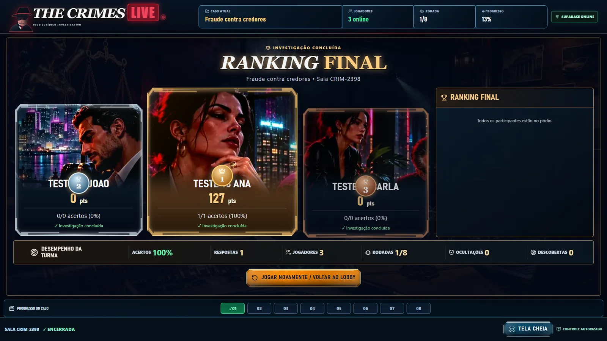

01Seleção dos casosSeis investigações jurídicas para escolher e configurar

Estas imagens são capturas reais da aplicação React durante uma partida de teste sincronizada pelo Supabase. Interface, pontuação, QR Code, escolhas e personagens são renderizados pelo próprio jogo.






Galeria de homologação visual do THE CRIMES LIVE V6. Os participantes e a pontuação exibidos são dados de uma partida de demonstração; as imagens não são componentes clicáveis do jogo. Para interagir, abra a aplicação pelos links acima.